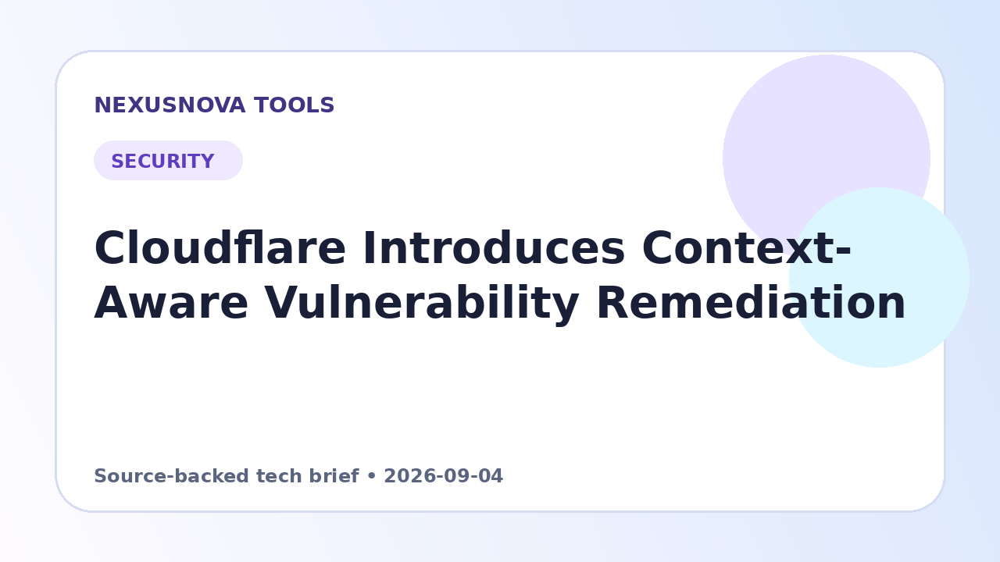

Cloudflare Introduces Context-Aware Vulnerability Remediation
Cloudflare connects live edge traffic insights with OpenAI Daybreak models to uncover vulnerabilities and propose verified patches.
Published 2026-09-04 • NexusNova Editorial Team

Prioritizing Vulnerabilities with Production Signals
Traditional code scanners often flood security teams with thousands of alerts without clarifying whether the vulnerable code is active in production or under attack. Cloudflare is addressing this bottleneck with Vulnerability Discovery and Remediation, an invitation-only service offered through Cloudflare Managed Defense.
The service combines code inspection with real-time telemetry from Cloudflare Web Assets and Web Application Firewall (WAF) configurations. By tracking route volume, existing defensive rules, and suspicious traffic spikes, the platform identifies which code paths are actively exposed and prioritizes findings based on actual operational risk.
AI-Driven Hunting and Edge Rule Mitigations
To inspect customer-authorized codebases, the system uses the OpenAI Daybreak Defense Network, leveraging specialized models such as GPT-5.6 Cyber. A reconnaissance agent first maps public endpoints to internal handlers, directing hunter agents to focus on high-traffic or heavily probed paths.
Every vulnerability finding must be confirmed by source code evidence. Once verified, the system generates targeted code patches alongside conservative Cloudflare WAF Custom rules. These temporary firewall rules protect endpoints against incoming threats while software engineering teams review and deploy the permanent code fix.
Safety Boundaries and Model Architecture
The discovery harness runs on Cloudflare infrastructure, dispatching sanitized prompts through Cloudflare AI Gateway to OpenAI servers. Model inference does not run directly on Cloudflare edge nodes, and models lack the authority to independently execute changes or deploy code.
All proposed WAF rules undergo syntax validation and synthetic fixture testing rather than testing on live user traffic. Human review remains mandatory: the customer's engineering team retains full control over whether to accept, adjust, or discard any proposed code changes or edge mitigations.
Practical next steps
- Contact your Cloudflare account representative to request invitation-only early access through Managed Defense.
- Select an initial target application and grant authorized access to its codebase, Web Assets inventory, and WAF settings.
- Review prioritized findings, validating proposed WAF custom rules and code patches before deploying fixes to production.